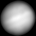
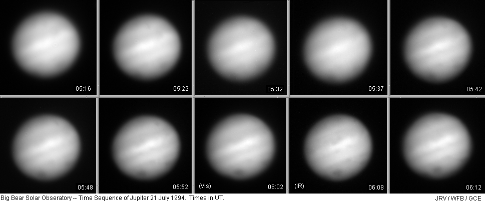
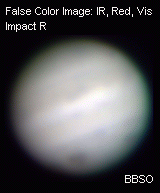
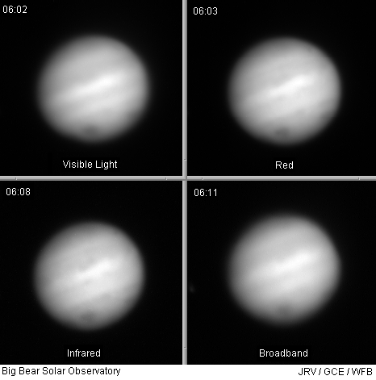
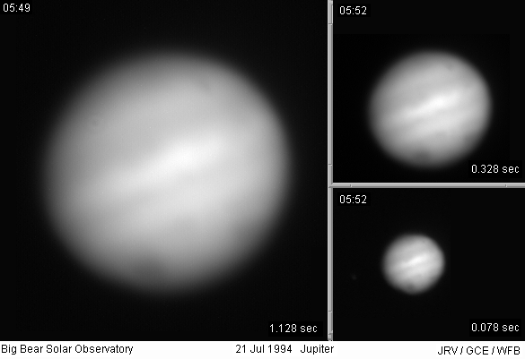
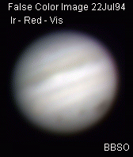
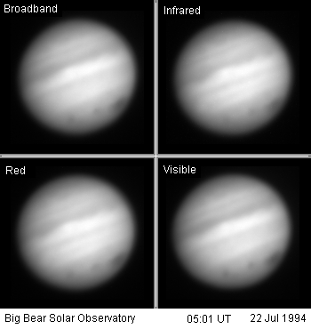

The following images of Jupiter were taken at
Big Bear Solar Observatory
at around the time of the Shoemaker-Levy 9 R and V fragment impacts. Unfortunately, no
fireballs were visible (intermittent clouds and poor seeing conditions didn't help), but
previous impact areas can be clearly seen on the disk.
All images were taken by staff members John Varsik and Glenn Eychaner, and
summer students Walter Brisken, Michael Hartl, Vincent Pery, and Hans-Michael
Hauser, with the 65cm telescope and 12-bit 1024x1024 CCD camera. South is
down, and Jupiter rotates left to right.

The GIF animation at left was produced from the one hour time series of 10 images below,
taken using the full camera sensitivity (about 4000-10000 Angstroms) for the shortest
possible exposures. In the early images, two impact areas from earlier impacts can be
seen in the south at left and right; in the last images, the impact R area appears to
begin to show as a dent in the edge of the image.



The false color image at upper left was produced from the IR, red, and visible images from
the set of four images at lower left, each taken with different filtration. The visible
image was taken with a 4000-7000 Angstrom bandpass, the red with a 6000-7000 Angstrom
bandpass, the IR with a 7000+ Angstrom cutoff filter, and the broadband with no filter.

Above are three images taken at approximately the same time using the full camera
sensitivity at different resolutions and exposures, using the camera's built-in 2x2 and 4x4
summing modes. The effect of exposure time on image quality can clearly be seen.


The false color image at left was produced from the IR, red, and visible images from the set
of four images at right, each taken with different filtration. The visible image was taken
with a 4000-7000 Angstrom bandpass, the red with a 6000-7000 Angstrom bandpass, the IR with
a 7000+ Angstrom cutoff filter, and the broadband with no filter.